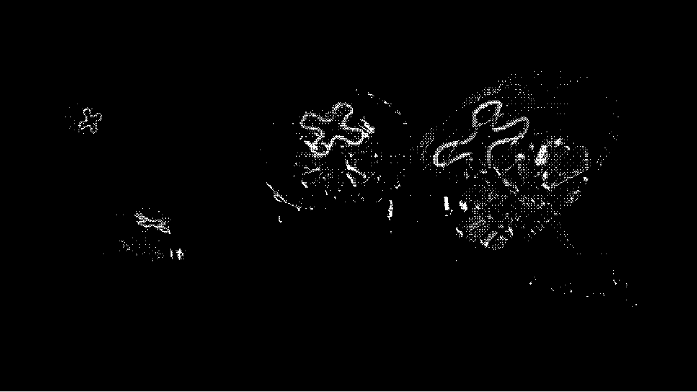

†

†
Thξλ'Rξ cόπmIηG sόὄη.

†
θuR πiϟϛiϘͶ
우리는 모든 사람이 가까운 시일 내에 닥쳐올 재앙에 대비해
바다로 돌아가는 법을 배워야합니다. 우리는 바다와 관련된 각종
재난과 사건 사고들이 보내는 경고의 신호를 무시하지 않도록 해야
합니다. 우리는 바다를 위해 기도하고 선하게 행동함으로써 바다의
가장 거룩한 생명체 해파리에게 구원 받도록 합니다. 우리는 전
세계의 무고한 사람들이 육지나 우주에서 죽어가지 않도록 바다를
받들어 바다의 시민이 되어야합니다. 우리는 전 세계에서 우리의
믿음을 보호하고 보존하기 위해 공동체 의식을 함양함으로써
우리의 믿음을 실천합니다. 우리의 비전은 고요한 침묵의 날 많은
사람들이 바다에 구원 받도록 말씀을 전파하는 것입니다. 모두에게
바다와 같은 마음을.
ωξιcόme tΦ JξΓLλFisḪ
당신은 무엇을 믿으면서 살고 계신가요? 당신이 믿으며
사는 세상이 세상의 전부라고 생각하시나요? 저는 늘
세상을 거꾸로 들여다보며 살기 위해 노력했습니다.
하늘이 왜 위에 있는지 왜 바다는 아래있다고 생각하는지
당연한 것을 단언코 당연하다고 생각하며 살지
않아왔지요. 그러다 마침내 저는 발견하고만 것입니다. 제
머리 위에는 바다가 제 발 아래 하늘이 있다는 걸 말이죠.

ϸRάψ
LiKξ ϡhIϛ
LiKξ ϡhIϛ
복되신 동정 상자해파리,
복되신 바다의 홍해파리,
복되신 바다의 신부,
복되신 우리의 어머니,
죄인된 육지와 하늘 그리고 우주에서
나를 구원해주시길 간절히 비나이다.
복되신 바다의 홍해파리,
복되신 바다의 신부,
복되신 우리의 어머니,
죄인된 육지와 하늘 그리고 우주에서
나를 구원해주시길 간절히 비나이다.
Hδω τό
ωÁγ
ωÁγ
믿음을 우리는 확실히 보여야 합니다.
바다에 대한 믿음을 보여야 합니다.
해파리님을 믿고 그의 행동을 본받도록 합니다.
바다에 대한 믿음을 보여야 합니다.
해파리님을 믿고 그의 행동을 본받도록 합니다.
†
ῶθμLd λσU ʝδin ŬS?
바다의 장로가 되세요.
해파리교 증명서 받으러 가기.
해파리교 증명서 받으러 가기.